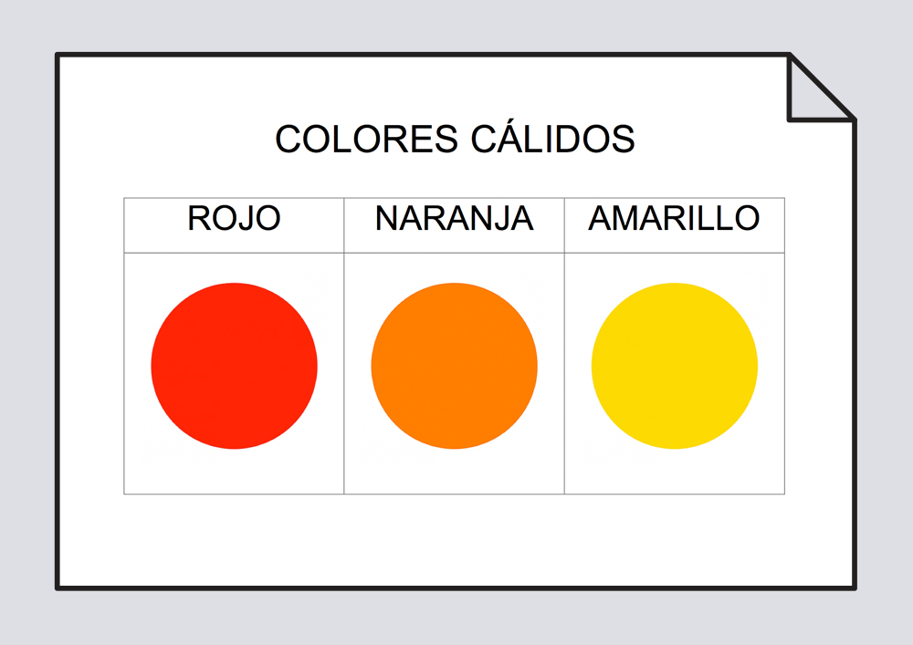
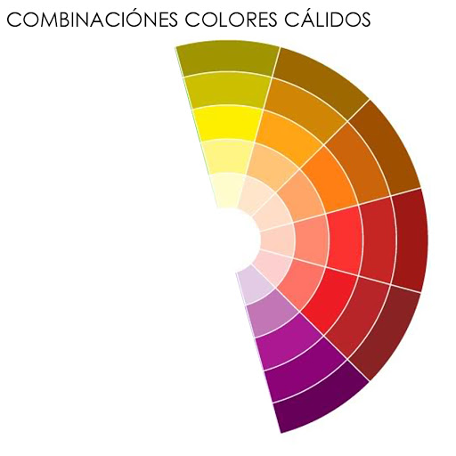
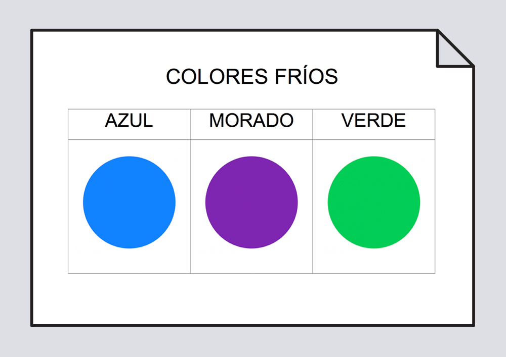
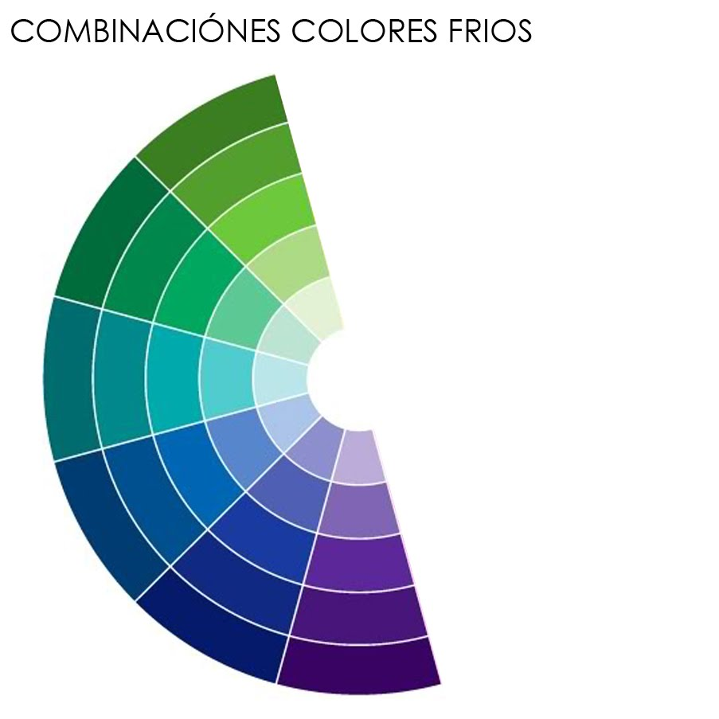

Análisis de la ubicacion del color dentro del círculo cromático.
Si se utiliza una armonía de colores cálidos el ambiente resultará confortable, llamativo y atractivo. Cuanto más intensos sean los colores utilizados, más vibrante y vívida será la combinación.
Es necesario manejar con mucho cuidado el uso extensivo de colores cálidos intensos ya que pueden dar como resultado un ambiente en el cual sea difícil permanecer mucho tiempo.
Por eso si quiere utilizar un esquema de colores cálidos recurra al uso de las gamas suaves de los cálidos, utilizando los intensos sólo en detalles.
Casi todas las gamas del azul pueden ser utilizadas con diversos verdes.
Se pueden lograr interesantes esquemas con colores fríos utilizando estos dos colores en diversas intensidades, el resultado es un ambiente espacio, que brinda sensación de serenidad y atmósfera de descanso.
También en este caso la utilización de los tonos intensos es aconsejable sólo en visibles detalles.